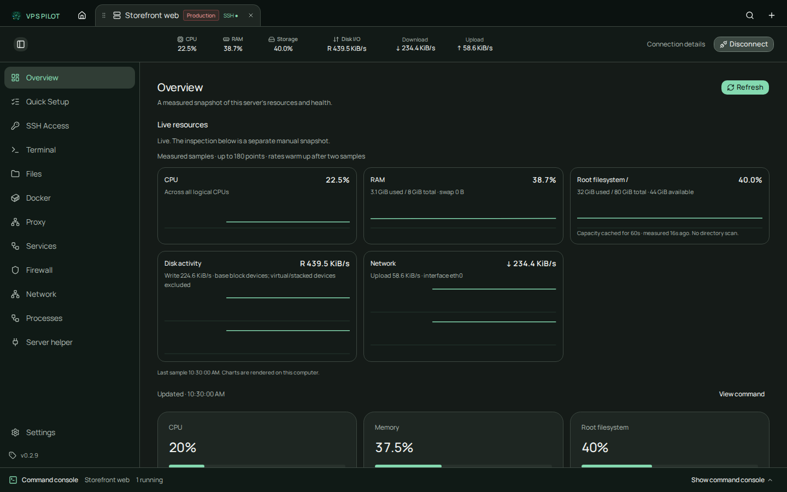
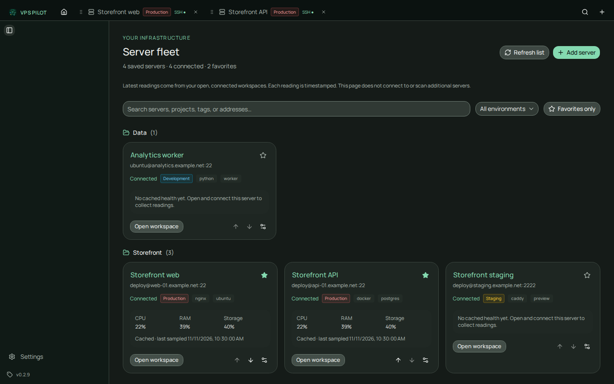
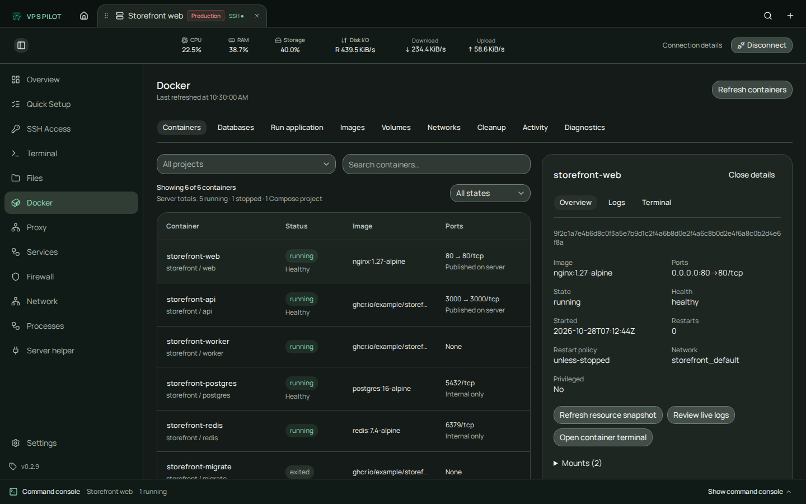
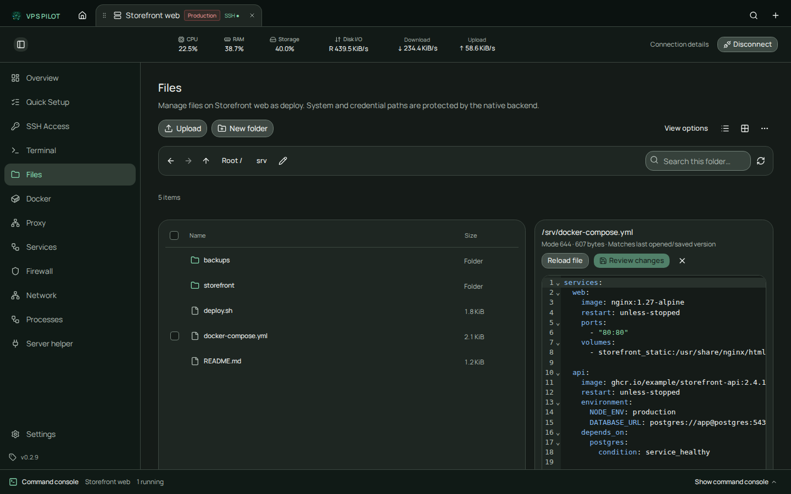
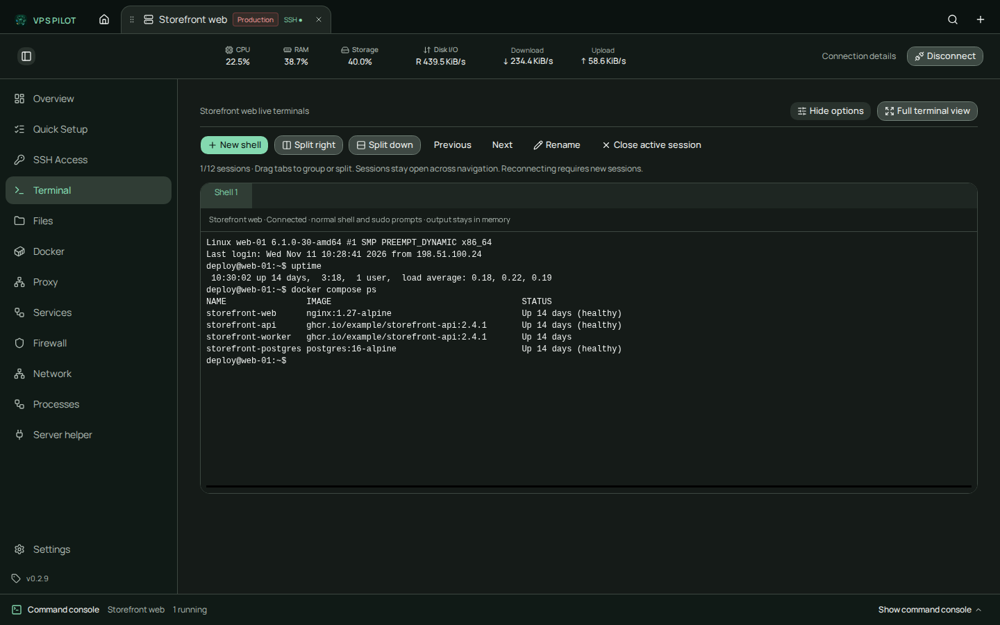

Split remote terminals
Open independent SSH PTYs, split right or down, group tabs, rename and maximize. Sessions survive navigation across tools, Home and other servers.
A desktop workspace for Linux servers
VPS Pilot brings SSH sessions, live health, SFTP files, Docker and guided provisioning into one native desktop app. Each server keeps its own context, and the exact command behind every app action stays visible.

No VPS Pilot account. Connections run directly from your desktop.
One workspace per server
Open multiple VPS connections at once. Terminals, charts, files, Docker views and command activity stay scoped to the server that owns them.
Open independent SSH PTYs, split right or down, group tabs, rename and maximize. Sessions survive navigation across tools, Home and other servers.
CPU, memory, root filesystem, disk I/O and network counters at 1, 2 or 5 seconds. One Python sampler runs over SSH — no daemon, listener or package install.
Compare the host fingerprint before authentication. Changed host keys block the connection. Passwords, keys and agent identities stay transient.
Browse SFTP, select in groups, copy, move, rename, upload and download ZIPs. Reviewed saves keep a protected backup; Delete moves into private server trash.
Inspect containers, Compose projects, details, one-shot stats, bounded logs and container shells. Cleanup protects volumes, mounted data and infrastructure workloads.
A six-step Quick Setup covers administrator access, SSH keys, firewall changes, application stacks, developer tools and runtimes on supported Debian and Ubuntu systems.
A closer look
These screenshots are generated from the React app with synthetic server data. They are refreshed automatically when the interface changes.




How it fits together
Import an SSH config entry or add a profile. Compare the host fingerprint, then use a password, private key, agent or none. Credentials are never saved.
Start live metrics or run a read-only inspection. Partial results and missing tools stay labeled; the app does not replace them with sample values.
Every app-triggered sudo command gets its own approval. The command console shows the command, live output and result. Separate policies cover SFTP, Docker and Quick Setup.
Access and approvals
VPS Pilot treats an existing server as something to preserve. Read-only inspection, explicit reviews and visible uncertainty are defaults — not hidden settings.
Read supported systems and limitsCurrent release
Generic app-triggered systemd, proxy and firewall mutations remain disabled in normal builds. Reviewed SFTP writes, Docker management and the narrow Quick Setup provisioning capability use separate policies.
Quick Setup accepts Debian 12/13 and Ubuntu 22.04/24.04/26.04/26.10 on x86_64/arm64. Full provisioning and SSH/UFW recovery were validated on Debian 12 arm64; other accepted combinations still need release validation. Live metrics require Linux /proc and Python 3.
Windows installers are unsigned. macOS builds use ad-hoc signing and are not notarized. Read the README for the complete current limits.
Linux, Windows, and macOS
Download the latest published release.
All links point to fixed installer names on the latest GitHub Release. The site does not fetch a manifest or call the GitHub API from your browser.
All releases & checksums